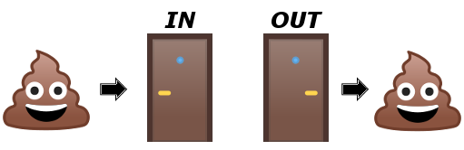

# Synthesis in Drug Design ## Lead Discovery A/Prof. Mark Coster <p> <small> https://mcoster.net / [@MarkCoster_Chem](http://twitter.com/MarkCoster_Chem) </small> </p> <p> <small> [Drug Design - Course Hub](https://teaching.mcoster.net/DDD/) </small> </p> --- ## New drug development  --- ### Lead Discovery High throughput screening against a validated target is a common way to find a lead compound - need a large _**'library'**_ of compounds to screen (eg. millions of compounds!) - libraries can be derived from various sources (purchased or in-house): - _natural products_ - eg. [NatureBank](https://www.griffith.edu.au/institute-drug-discovery/nature-bank) - _combinatorial chemistry_ (CombiChem) - _parallel synthesis_ --- ### Compounds Australia <div style="display: flex; align-items: center;">  <div> [Compounds Australia](https://www.griffith.edu.au/science-aviation/compounds-australia) is Australia's only dedicated compound management facility. It brings together chemists (who have molecules) with biologists (who have targets). </div> </div> - Libraries: - _Open Academic collection:_ >19,500 pure compounds - _Open Scaffolds collection:_ >33,000 pure compounds - _Open Drugs collection:_ >2,500 FDA-approved drugs --- ### Combinatorial Chemistry <div style="display: flex; align-items: center;"> <div style="flex: 0 0 67%;"> CombiChem uses synthetic techniques to make large numbers (up to millions) of molecules quickly. Often the compounds are generated, and even tested, as mixtures, requiring **_deconvolution_** to identify the active component(s). </div> <div style="flex: 1;"> <a title="By SynthAr (Own work) [CC BY-SA 3.0 (http://creativecommons.org/licenses/by-sa/3.0)], via Wikimedia Commons" href="https://commons.wikimedia.org/wiki/File%3ASplit-mix_synthesis.jpg"><img width="256" alt="Split-mix synthesis" src="https://upload.wikimedia.org/wikipedia/commons/0/0f/Split-mix_synthesis.jpg"/></a> </div> </div> --- ### Combinatorial Chemistry - solid-phase synthesis - History of solid-phase synthesis: - **1963** - Merrifield [published](http://pubs.acs.org/doi/abs/10.1021/ja00897a025) first 'solid-phase' synthesis technique - peptides. - **1984** - Nobel prize in Chemistry - **Today** - Solid-phase peptide synthesis (SPPS) is standard method up to 70 amino acids --- ### Merrifield SPPS  <small>Image from "An Introduction to Medicinal Chemistry" by Graham L. Patrick</small> --- ### Polymer resin swells in organic solvent  <small>Image from "An Introduction to Medicinal Chemistry" by Graham L. Patrick</small> --- ### SPS CombiChem strategy  <small>Image from "An Introduction to Medicinal Chemistry" by Graham L. Patrick</small> --- ### Split and Pool CombiChem strategy  --- ### Screening Methods '**on-bead**': screen resin-bound products ; _or_ '**off-bead**': release products from resin, then screen in solution --- ### How to determine structure of active(s) in mixture? - **direct structure determination** - eg. peptide sequencing - a 100-μm bead contains ~ 100 pmole of peptide - **tagging** - at each step the bead is modified with a unique molecular tag - **deconvolution** - successively narrow down candidate structures --- ### Deconvolution  <small>“Combinatorial Chemistry” N.K. Terrett, Oxford University Press, New York, 1998 </small> --- ### Why aren't we swimming in drugs? In the 1990's, the pharmaceutical industry was awash with optimism about the impact of CombiChem on the discovery of new drugs - access to large compound numbers became easily achievable - _however_, high hopes for CombiChem were attenuated by a lacklustre flow through to new drugs #### Why? --- ## Question: ### How many small, organic molecules are possible? #### (C, H, N, O, S; M<sub>w</sub> < 500) --- ## Estimate: ### 10<sup>60</sup>!!! #### _Note_: there are estimated to be 10<sup>78</sup> to 10<sup>82</sup> atoms in the known, observable universe! <small><a href="onlinelibrary.wiley.com/doi/10.1002/(SICI)1098-1128(199601)16:1<3::AID-MED1>3.0.CO;2-6/abstract"> The art and practice of structure-based drug design: A molecular modeling perspective. Bohacek, R. S.; McMartin, C.; Guida, W. C. _Med. Res. Rev._ **1996**, _16_, 3-50.</a></small> --- <a title="By Google [Apache License 2.0 (http://www.apache.org/licenses/LICENSE-2.0)], via Wikimedia Commons" href="https://commons.wikimedia.org/wiki/File%3ANoto_Emoji_Oreo_1f6aa.svg"></a> --- ### Intelligent library design - compounds that are easy to make aren't necessarily good drug leads - without careful design, CombiChem libraries can lack chemical diversity - ie. large number of highly similar compounds - efforts to intelligently design screening libraries include '**Diversity-oriented synthesis**' (DOS) --- ### Diversity-oriented synthesis - aims to generate structural diversity efficiently  <small><a href="doi.org/10.1039/C2CS35023H">_Chem. Soc. Rev._, **2012**, _41_, 4444-4456.</a></small> --- ### DOS example - diverse chemical structures from two simple starting materials  <small><a href="doi.org/10.1039/C2CS35023H">_Chem. Soc. Rev._, **2012**, _41_, 4444-4456.</a></small> --- ### Parallel synthesis - series of reactions are carried out in series of wells - _analogues_ - each well contains **one** product  --- ### Parallel synthesis - can be done in solution or on solid phase - technical innovations speed up synthesis - microwave vs. conventional heating - reaction 'carousels'  --- ### Parallel vs CombiChem Split-Pool Split-Pool | Parallel -----------|--------- large # molecules | moderate # molecules picomole quantities | mmol easily achieved deconvolution of mixtures | immediate SAR data synergism/antagonism in screening mixtures | single compound per well --- ## Summary: _Synthetic libraries can be formed through combinatorial chemistry or parallel synthesis techniques._ - Advantages and disadvantages of each - **Intelligent design** of compound libraries essential - ensure that library members are drug-like (or 'lead-like') - aim for high diversity